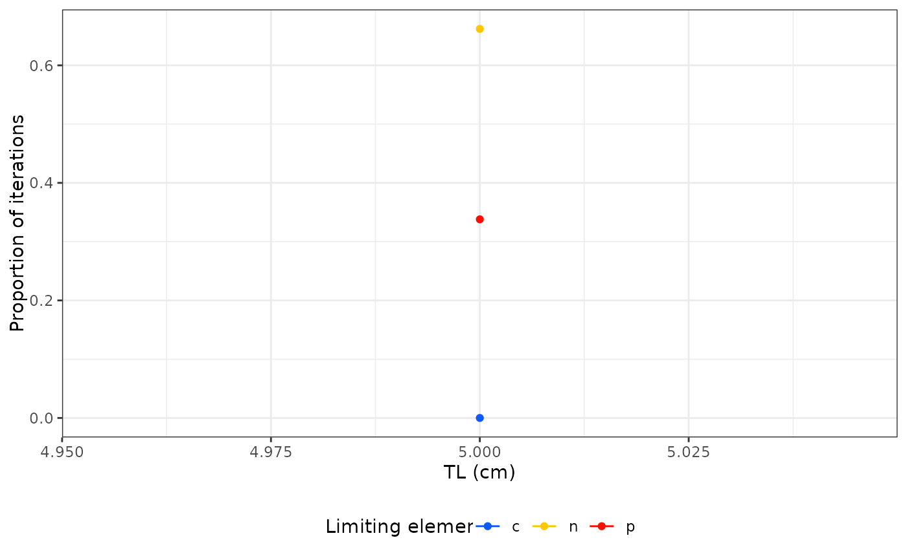

This function allows you extract the proportions of the iterations for which c, n and p are the limiting element in the model.
limitation(mod, plot = TRUE)Model output from cnp_model_mcmc().
Argument to specify if results should be shown in a plot.
Returns a data frame with:
Total length, in cm
c, n or p
the proportion of iterations for which there is limitation by the element
library(fishflux)
mod <- cnp_model_mcmc(TL = 5, param = list(Qc_m = 40, Qn_m = 10, Qp_m = 4,
Dc_sd = 0.1, Dn_sd = 0.05, Dp_sd = 0.05))
#> Warning: not inputting certain parameters may give wrong results
#> Warning: adding standard values for ac_m
#> Warning: adding standard values for an_m
#> Warning: adding standard values for ap_m
#> Warning: adding standard values for Dc_m
#> Warning: adding standard values for Dn_m
#> Warning: adding standard values for Dp_m
#> Warning: adding standard values for linf_m
#> Warning: adding standard values for k_m
#> Warning: adding standard values for t0_m
#> Warning: adding standard values for theta_m
#> Warning: adding standard values for r_m
#> Warning: adding standard values for h_m
#> Warning: adding standard values for lwa_m
#> Warning: adding standard values for lwb_m
#> Warning: adding standard values for mdw_m
#> Warning: adding standard values for v_m
#> Warning: adding standard values for F0nz_m
#> Warning: adding standard values for F0pz_m
#> Warning: adding standard values for alpha_m
#> Warning: adding standard values for f0_m
#> Warning: adding standard values for lt_sd
#> Warning: adding standard values for ac_sd
#> Warning: adding standard values for an_sd
#> Warning: adding standard values for ap_sd
#> Warning: adding standard values for linf_sd
#> Warning: adding standard values for k_sd
#> Warning: adding standard values for t0_sd
#> Warning: adding standard values for theta_sd
#> Warning: adding standard values for r_sd
#> Warning: adding standard values for h_sd
#> Warning: adding standard values for lwa_sd
#> Warning: adding standard values for lwb_sd
#> Warning: adding standard values for mdw_sd
#> Warning: adding standard values for v_sd
#> Warning: adding standard values for F0nz_sd
#> Warning: adding standard values for F0pz_sd
#> Warning: adding standard values for Qc_sd
#> Warning: adding standard values for Qn_sd
#> Warning: adding standard values for Qp_sd
#> Warning: adding standard values for alpha_sd
#> Warning: adding standard values for f0_sd
#>
#> SAMPLING FOR MODEL 'cnpmodelmcmc' NOW (CHAIN 1).
#> Chain 1: Iteration: 1 / 1000 [ 0%] (Sampling)
#> Chain 1: Iteration: 100 / 1000 [ 10%] (Sampling)
#> Chain 1: Iteration: 200 / 1000 [ 20%] (Sampling)
#> Chain 1: Iteration: 300 / 1000 [ 30%] (Sampling)
#> Chain 1: Iteration: 400 / 1000 [ 40%] (Sampling)
#> Chain 1: Iteration: 500 / 1000 [ 50%] (Sampling)
#> Chain 1: Iteration: 600 / 1000 [ 60%] (Sampling)
#> Chain 1: Iteration: 700 / 1000 [ 70%] (Sampling)
#> Chain 1: Iteration: 800 / 1000 [ 80%] (Sampling)
#> Chain 1: Iteration: 900 / 1000 [ 90%] (Sampling)
#> Chain 1: Iteration: 1000 / 1000 [100%] (Sampling)
#> Chain 1:
#> Chain 1: Elapsed Time: 0 seconds (Warm-up)
#> Chain 1: 0.018778 seconds (Sampling)
#> Chain 1: 0.018778 seconds (Total)
#> Chain 1:
limitation(mod)
#> geom_path: Each group consists of only one observation. Do you need to adjust
#> the group aesthetic?

#> tl nutrient prop_lim
#> 1 5 c 0.000
#> 2 5 n 0.668
#> 3 5 p 0.332